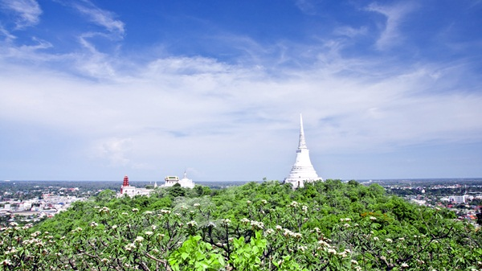
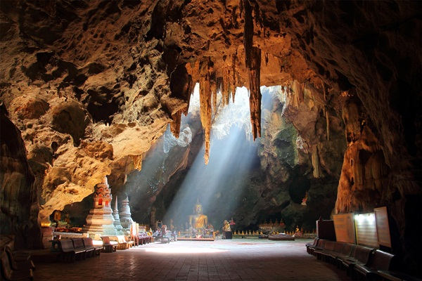
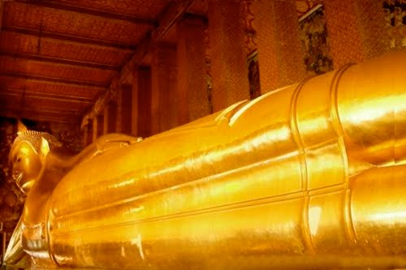
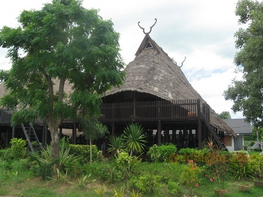
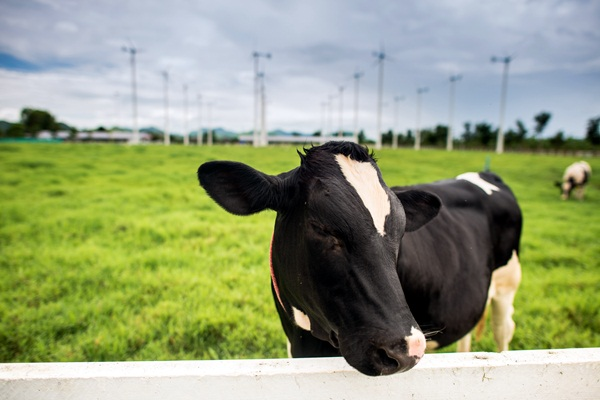

หากจะพูดถึงแหล่งท่องเที่ยวที่น่าไปแบบไม่ไกลกรุงก็มีให้เลือกอยู่หลายที่
แต่เห็นจะมีอยู่หนึ่งจังหวัดที่น่าสนใจไม่แพ้จังหวัดอื่น ๆ เลยนั่นก็คือ "จังหวัดเพชรบุรี"
เมืองเก่าแก่ที่น่าหลงใหล ทั้งความสวยงามของท้องทะเล ศิลปวัฒนธรรมและประวัติศาสตร์ที่สำคัญ
รวมไปถึงวิถีชีวิตของผู้คน
|
เพชรบุรี
ถือเป็นเมืองด่านสำคัญระหว่างภาคกลางและภาคใต้
อีกทั้งยังขึ้นชื่อในเรื่องของแหล่งผลิตน้ำตาล
เนื่องจากมีต้นตาลหนาแน่น
สังเกตได้จากร้านของฝากข้างทางที่นำผลผลิตจากต้นตาลมาวางจำหน่ายให้เห็นกันหนาตา
นอกจากนี้ยังมีแหล่งท่องเที่ยวเด็ด ๆ ที่มีชื่อเสียงมากมาย
อีกทั้งมีระยะทางที่ไม่ไกลจากกรุงเทพมหานครมากนัก จึงไม่แปลกที่ในช่วงวันหยุดสุดสัปดาห์เมืองเพชรฯ
แห่งนี้จะเป็นแหล่งรวมนักท่องเที่ยวทั้งชาวไทยและชาวต่างชาติที่เดินทางมา
เสพความสุขในวันพักผ่อนของพวกเขากันอย่างเบิกบานใจ
|
พระนครคีรี (เขาวัง)
|

|
พระนครคีรี เดิมชาวบ้านเรียกว่า "เขาสมน"
โดยพระบาทสมเด็จพระจอมเกล้าเจ้าอยู่หัว (รัชกาลที่ 4)
โปรดเกล้าฯ ให้เจ้าพระยาศรีสุริยวงศ์ (ช่วง บุนนาค) พระสมุหกลาโหมเป็นแม่กองก่อสร้าง สำเร็จในปี
พ.ศ. 2403 และทรงพระราชทานนามว่า "พระนครคีรี" แต่ชาวเมืองเพชรนิยมเรียกกันติดปากว่า "เขาวัง"
สืบมาจนทุกวันนี้ โดยพระนครคีรีตั้งอยู่บนยอดเขาใหญ่ 3 ยอด คือ ยอดเขาด้านทิศตะวันออก
ซึ่งเป็นที่ตั้งของวัดพระแก้ว ภายในจะมีพระอุโบสถ พระสุทธเสลเจดีย์ หอระฆัง ศาลา และพระปรางค์แดง
ยอดเขากลางเป็นที่ประดิษฐานเจดีย์ทรงกลม มีฐานทักษิณโดยรอบ โดยได้รับพระราชทานนามว่า
"พระธาตุจอมเพชร" และยอดเขาด้านทิศตะวันตกเป็นที่ตั้งของพระราชวังที่ประกอบไปด้วยหมู่พระที่
นั่งและอาคารต่าง ๆ
|
ถ้ำเขาหลวง
|

|
ถ้ำเขาหลวง ตั้งอยู่บนเขาหลวงที่มีความสูงประมาณ
92 เมตร โดยภายในจะมีหินงอกหินย้อยที่สวยงาม
จุดเด่นของที่นี่ ก็คือ ลำแสงอาทิตย์ที่สอดส่องเข้ามาภายในถ้ำ
ซึ่งสร้างจุดเด่นให้กับองค์พระพุทธรูปฉลองพระองค์ที่ประดิษฐานอยู่ใจกลางให้
ดูโดดเด่นสง่างามมากยิ่งขึ้น โดยองค์พระพุทธรูปดังกล่าวพระบาทสมเด็จพระจุลจอมเกล้าเจ้าอยู่หัว
โปรดให้สร้างถวายพระบาทสมเด็จพระจอมเกล้าเจ้าอยู่หัว ซึ่งเคยเสด็จประพาสมาและทรงโปรดถ้ำแห่งนี้
อีกทั้งยังทรงบูรณะพระพุทธรูปเก่าแก่ภายในถ้ำนี้อีกหลายองค์
|
พระรามราชนิเวศน์หรือพระราชวังบ้านปืน
|

|
พระรามราชนิเวศน์หรือพระราชวังบ้านปืน
ตั้งอยู่ที่ตำบลบ้านหม้อ อำเภอเมือง
ซึ่งพระบาทสมเด็จพระจุลจอมเกล้าเจ้าอยู่หัว
มีพระราชประสงค์ให้สร้างด้วยพระราชทรัพย์ส่วนพระองค์สำหรับประทับแรมในฤดูฝน โดยทรงโปรดเกล้าฯ
ให้จัดซื้อที่จากราษฎร และให้ จอมพลเรือสมเด็จพระเจ้าบรมวงศ์เธอเจ้าฟ้าบริพัตรสุขุมพันธ์
กรมพระนครสวรรค์วรพินิต กับสมเด็จพระเจ้าบรมวงศ์เธอ กรมพระยาดำรงราชานุภาพ เป็นแม่กองจัดการก่อสร้าง
ซึ่งภายในมีความโดดเด่นทางด้านสถาปัตยกรรมแบบยุโรป ตลอดจนมีการตกแต่งภายในที่สวยงดงามเป็นอย่างมาก
เป็นผลงานการออกแบบของ มิสเตอร์คาล เดอริง ชาวเยอรมัน แล้วเสร็จในปี พ.ศ. 2459
ในรัชสมัยพระบาทสมเด็จพระมงกุฎเกล้าเจ้าอยู่หัว ได้พระราชทานนามว่า "พระที่นั่งศรเพ็ชรปราสาท"
และทรงเปลี่ยนเป็น "พระรามราชนิเวศน์" เมื่อปี พ.ศ. 2461 ใช้เป็นที่รับรองแขกเมือง
และต่อมาในสมัยพระบาทสมเด็จพระปกเกล้าเจ้าอยู่หัว ทรงโปรดเกล้าฯ
ให้ใช้เป็นที่ตั้งของโรงเรียนผู้กำกับลูกเสือ
โรงเรียนฝึกหัดครูเกษตรกรรมและโรงเรียนประชาบาลประจำตำบล
|
วัดพุทธไสยาสน์ (วัดพระนอน)
|

|
วัดนี้ตั้งอยู่บนถนนคีรีรัถยา ตำบลคลองกระแชง
เป็นวัดเก่าแก่ไม่ปรากฏหลักฐานว่าสร้างขึ้นมาตั้งแต่เมื่อใด
สันนิษฐานว่าเป็นวัดที่มีมาตั้งแต่สมัยอยุธยา โดยสังเกตจากพระพุทธไสยาสน์สมัยอยุธยายาว 21 วา 1 ศอก
1 คืบ 7 นิ้ว ก่ออิฐถือปูนลงรักปิดทอง ภายในองค์พระเป็นโพรง
ที่ฝ่าพระบาทได้เขียนลายทองเป็นภาพประสาท พระพรหม ฉัตรพระมหามงกุฎ บาตร คนโท น้ำ สังข์ พระขรรค์
ช้าง ปลา ถาดทอง พัดใบตาล พัดหางนกยูง ดอกบัวแก้ว
|
ศูนย์วัฒนธรรมไทยทรงดำหรือลาวโซ่ง
|

|
ตั้งอยู่หมู่ 5 ตำบลเขาย้อย
เดินทางตามทางหลวงหมายเลข 4 เลยจากแยกอำเภอเขาย้อย มาทางตัวเมืองเพชรบุรีประมาณ 1 กิโลเมตร
เลี้ยวซ้ายตรงทางเข้าโรงเรียนบ้านวัง เข้าไปประมาณ 300 เมตร ไทยทรงดำหรือลาวโซ่ง
เป็นชนกลุ่มหนึ่งที่มีถิ่นฐานเดิมอยู่ที่เมืองเดียนเบียนฟูในเวียดนามเหนือ
มีอาณาเขตติดต่อกับประเทศลาว เข้ามาตั้งถิ่นฐานอยู่ในไทยนานกว่า 200 ปี ราว ๆ
สมัยกรุงธนบุรีและกรุงรัตนโกสินทร์ตอนต้น มีวัฒนธรรมประเพณีที่เป็นเอกลักษณ์ นิยมแต่งกายด้วยสีดำ
จึงเรียก "ไทยทรงดำ" มีภาษาพูดและภาษาเขียนเป็นของตนเอง มีความรู้ความชำนาญด้านการทอผ้าและจักสาน
|
โครงการชั่งหัวมันตามพระราชดำริ
|

|
โครงการชั่งหัวมันตามพระราชดำริ
ตั้งอยู่ที่บ้านหนองคอกไก่ ตำบลเขากระปุก อำเภอท่ายาง เดิมบริเวณนี้เป็นพื้นที่แห้งแล้ง
เกษตรกรส่วนใหญ่นิยมปลูกพืชไร่ ได้แก่ สับปะรด ข้าวโพด และอ้อย เป็นต้น
ต่อมาพระบาทสมเด็จพระเจ้าอยู่หัวทรงซื้อที่ดินบริเวณดังกล่าวจำนวน 250 ไร่
สำหรับเพาะปลูกพืชทำเป็นโครงการตามพระราชดำริเพื่อเป็นตัวอย่างแก่เกษตรกร
และได้มีชาวบ้านได้นำมันเทศที่ปลูกมาทูลเกล้าฯ ถวายพระองค์
แต่เมื่อเสด็จกลับมิได้ทรงนำมันหัวนั้นไปด้วย เมื่อเสด็จกลับมาอีกครั้งทรงพบว่ามันหัวนั้นงอกเป็นต้น
จึงมีพระราชดำรัสว่ามันอยู่ที่ไหนก็งอกได้ จึงมีพระราชดำริให้จัดเป็นพื้นที่เพาะปลูกพืชต่าง ๆ
โดยเน้นที่พืชท้องถิ่นของเพชรบุรี เช่น มะพร้าว ชมพู่เพชร มะนาว กะเพรา สัปปะรด ข้าวไร่พันธุ์ต่าง ๆ
|